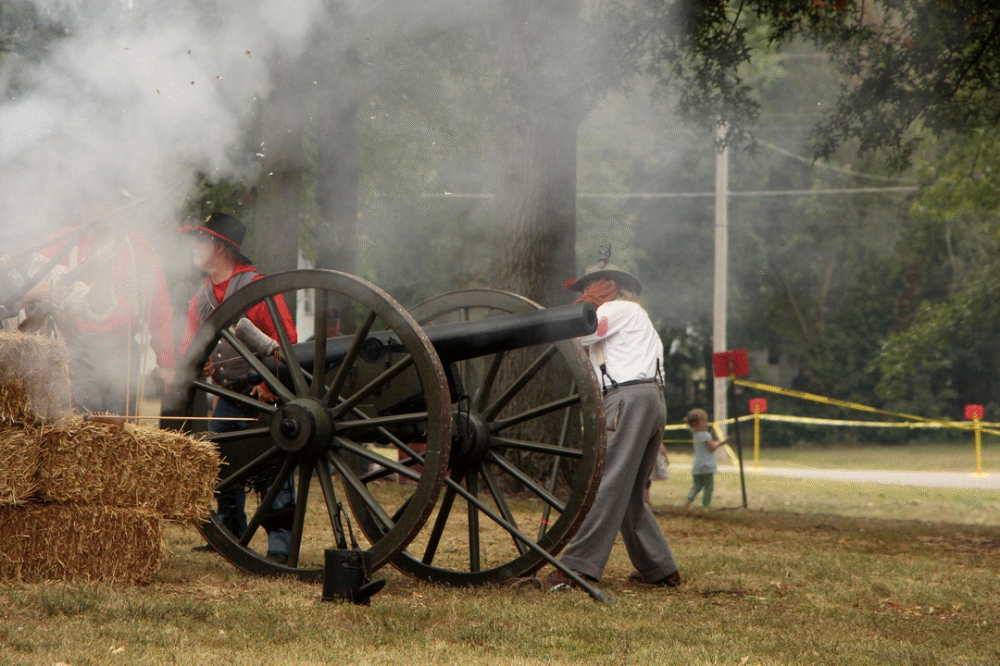
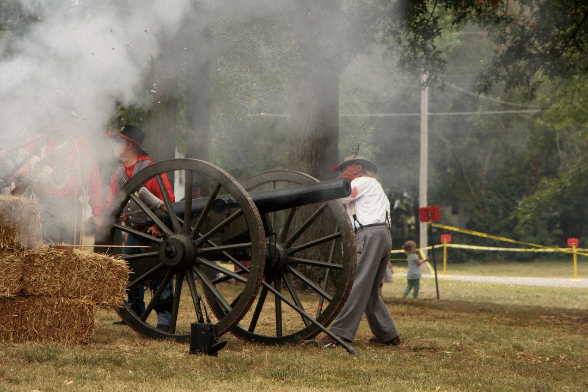

Andrew Jackson served as a major general in the War of 1812, and led American forces to victory over the British in the Battle of New Orleans. Jackson also ultimatley secured the state of florida for the United States, for he invaded it before it became part of the U.S. in 1821. Jackson also has experience for being the represenative of Tennessee. Jackson has always been involved with politics, all the way back when he was apointed to the court in Tennessee; so he will be the perfect fit for president with his strong military backround and general political experience.
 
